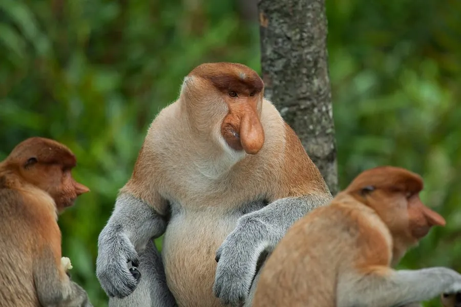

哺乳动物 · 动物界
长鼻猴 Nasalis larvatus

婆罗洲特有的猴类，雄性长着垂过嘴部的大鼻，腹部圆鼓似有四个胃，善游泳，栖息于红树林与河岸森林，是当地旗舰物种。
- 分类
- 门脊索动物门纲哺乳纲目灵长目科猴科属长鼻猴属
- 栖息环境
- 热带红树林、泥炭沼泽林、河岸与湖岸森林
- 地理分布
- 印度尼西亚加里曼丹、马来西亚沙巴与沙捞越、文莱的婆罗洲沿岸
- 保护级别
- IUCN 濒危（EN）；CITES 附录Ⅰ
物种志
长鼻猴是婆罗洲岛的特有灵长类。雄性体长约 70–75 厘米，体重 16–22 千克，最显著的特征是肥大下垂的鼻子，可长过嘴部并随年龄增长继续膨大，发情时能充血竖起发出响亮的鸣声；雌性鼻子短小上翘，体形仅为雄性一半左右。背部毛色橙红至棕黄，肩背与头顶较深，腹部与四肢内侧浅黄，面部裸皮呈肉粉色。
长鼻猴是反刍动物，胃分成多个腔室，可发酵分解含单宁的树叶，因此腹部特别圆鼓。它们栖息于红树林、泥炭沼泽林与河谷森林，常在树上取食嫩叶、果实和种子，也会泅水横渡河道，脚趾间有皮膜，游泳能力极强。群体由一只雄性与多只雌性及幼仔组成，雄性间为争夺群主地位会展开长时间的追逐和吼叫。栖息地因棕榈园扩张而快速萎缩，加上偷猎，其数量持续下降。
形态与习性
- 体长雄性约 70–75 cm，雌性约 55–62 cm
- 体重雄性约 16–22 kg，雌性约 7–11 kg
- 鼻长雄性鼻可垂至嘴下，长度可达 10 cm 以上
- 食性嫩叶、果实、种子与花，食物中树叶占比很高
- 消化特点具多室胃，可反刍发酵分解树叶中的单宁
- 繁殖孕期约 166 天，每胎一仔，幼仔毛色深蓝黑
- 种群现状全球野生个体估计不足 1 万只，呈下降趋势
趣味知识
- 雄性长鼻猴的大鼻可随情绪充血竖起，发出低沉吼声时尤为明显。
- 它们趾间有皮膜，能泅水数十米横渡河流，是少见的善游泳猴类。
- 幼猴出生时脸和毛色都呈深蓝黑色，数月后才逐渐转为橙黄色。